보험설계사를 위한 고객관리 앱 · 모든 정보는 내 휴대폰에만
© 2026 디벨로직. 이 설명서는 저작권법의 보호를 받는 저작물입니다. 무단 전재 · 복제 · 배포를 금합니다.
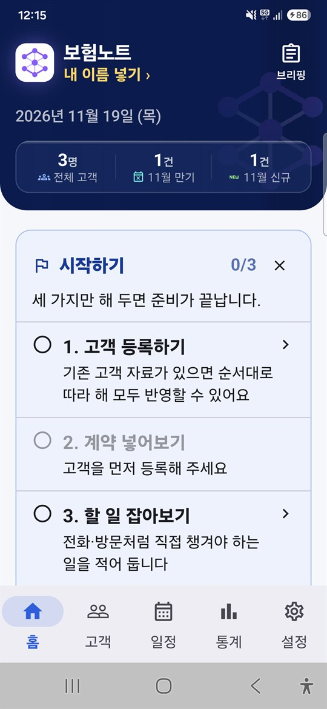
처음 켜면 홈 맨 위에 시작하기가 뜹니다. 세 줄을 위에서부터 누르기만 하면 됩니다.
끝낸 줄에는 초록 체크가 붙고, 셋 다 끝나면 안내가 사라집니다.
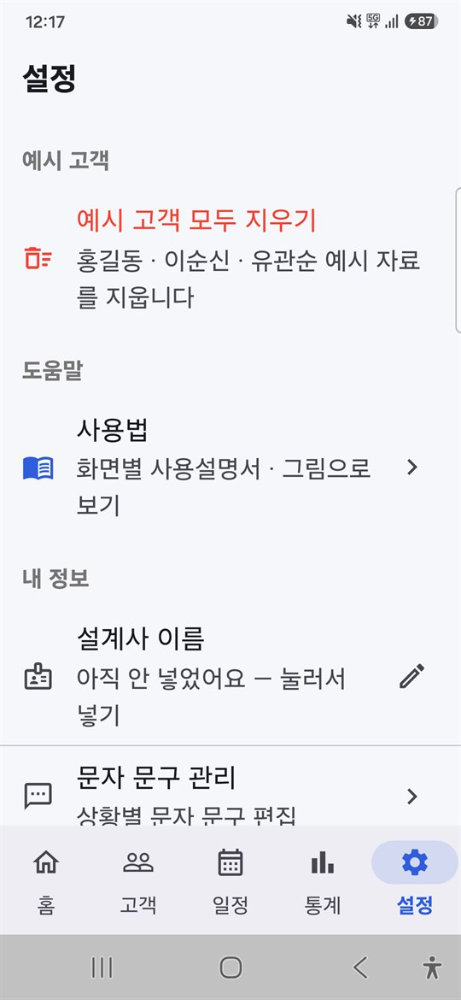
홈 맨 위 내 이름 넣기를 누르거나, 설정 탭의 설계사 이름에 이름을 넣으세요. 고객에게 보내는 문자 끝에 - 담당 설계사 (내 이름) 드림처럼 붙습니다.
처음 깔면 홍길동 · 이순신 · 유관순이 들어 있습니다. 눌러 보며 익히라고 넣어 둔 예시입니다. 다 익히셨으면 설정 맨 위 ‘예시 고객 모두 지우기’로 지우세요. 직접 넣은 고객은 지워지지 않습니다.
설정 > 도움말 > 사용법, 또는 홈 ‘시작하기’ 맨 아래 사용법 자세히 보기를 누르세요. 인터넷이 없어도 열립니다.
설명서 오른쪽 위 보내기를 누르면 문자·카톡으로 링크를 보내거나, 그림까지 담은 파일 하나로 저장·전송할 수 있습니다. PC나 드라이브에 저장해 두고 큰 화면으로 보셔도 됩니다.
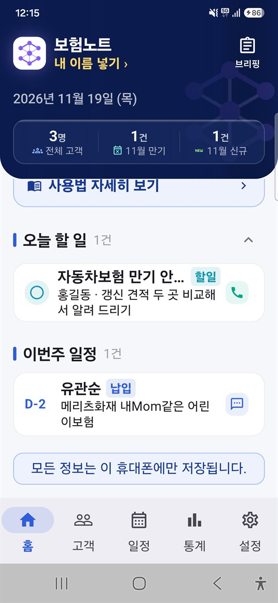
전체 고객 · 이번 달 만기 · 이번 달 신규입니다. 만기·신규 숫자를 누르면 해당 계약 목록이 열립니다.
오늘 챙길 것이 한 목록에 모입니다.
줄마다 전화 · 문자 버튼이 있습니다. 할 일은 왼쪽 동그라미를 누르면 완료됩니다.
그 아래에 내일부터 이번 주까지의 일정이 나옵니다. 지난 7일 동안 지나간 생일·상령일·만기와, 완료로 바꾸지 않은 상담 예약은 놓친 일정으로 따로 모아 줍니다. 상담 줄의 동그라미를 누르면 완료됩니다.
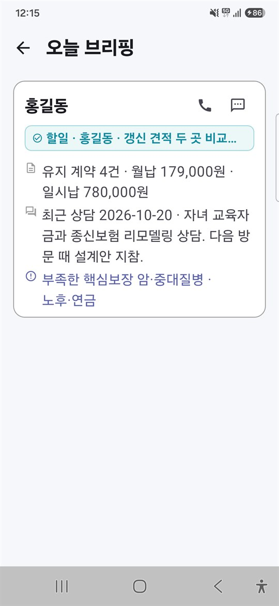
홈 오른쪽 위 브리핑을 누르세요. 오늘 연락할 고객을 한 사람당 카드 한 장으로 정리해 줍니다.
계약이 있으면 홈 아래쪽에 보험사별 장부 입구가 생깁니다(9장).
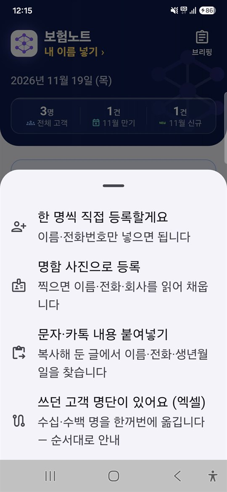
홈 ‘시작하기’의 고객 등록하기를 누르면 방법을 고르는 창이 뜹니다.
고객 탭 오른쪽 아래 고객 등록을 누르면 등록 화면이 바로 열립니다.
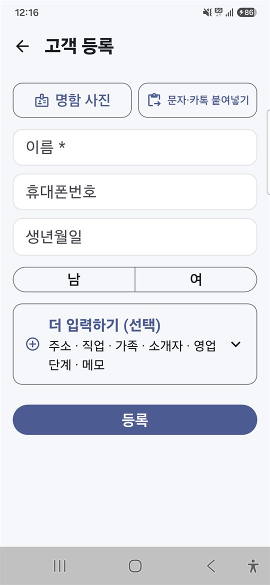
주소·직업·가족·소개자·영업 단계·메모는 더 입력하기 (선택)를 눌러야 보입니다. 지금 몰라도 나중에 수정에서 채우면 됩니다. 주소 칸을 누르면 주소 검색이 열립니다.
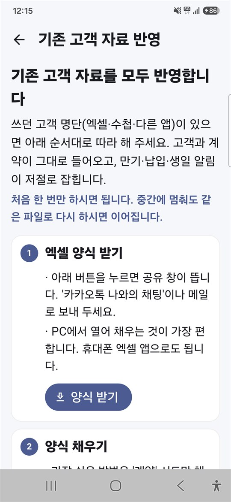
고객이 많으면 한 명씩 치지 마세요. 홈 ‘고객 등록하기’의 쓰던 고객 명단이 있어요 (엑셀), 또는 설정 > 데이터 관리 > 기존 고객 자료 반영하기를 누르면 순서 안내가 나옵니다.
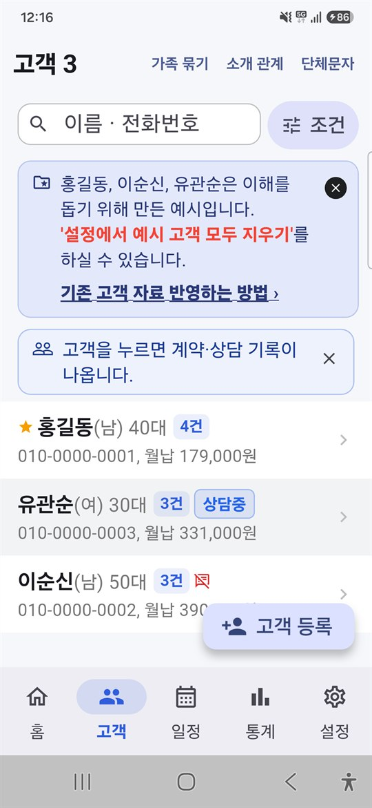
고객 탭 맨 위 검색창에 이름이나 전화번호를 칩니다. 초성도 됩니다 — ㄱㄷㅇ만 쳐도 강도윤이 나옵니다.
검색창 옆 조건을 누르면 이런 조건으로 거를 수 있습니다.
거른 뒤 목록 위 이 N명에게 문자로 그 사람들에게 문자를 보낼 수 있습니다.
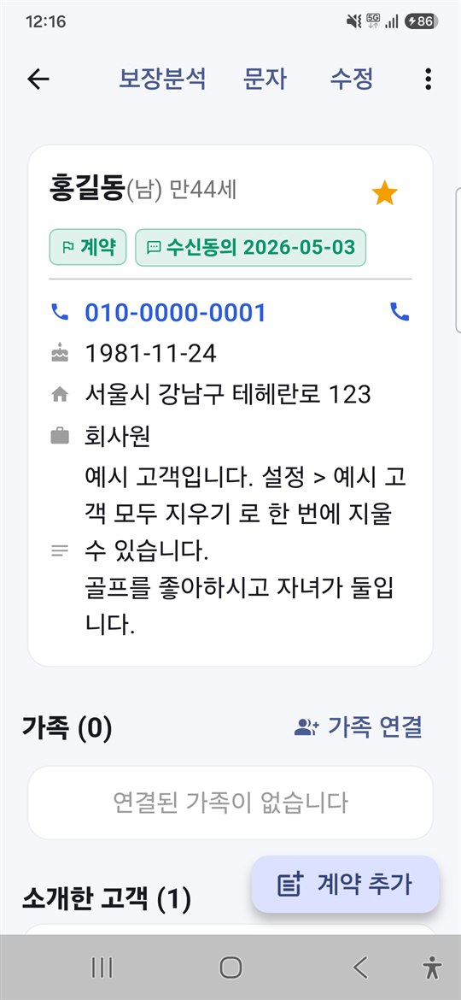
목록에서 고객을 누르면 그 고객의 모든 것이 한 화면에 나옵니다.
아래로 내리면 가족 · 계약 · 상담 · 서류가 차례로 나옵니다. 오른쪽 아래 계약 추가로 계약을 넣습니다.
이름 아래 작은 표시를 누르면 바로 바꿀 수 있습니다.
고객 화면의 가족 연결을 누르고 다른 고객을 고르면 한 가족으로 묶입니다. 빼려면 오른쪽 위 ⋮ > 가족에서 빼기를 누릅니다.
첨부를 누르고 신분증·청약서·증권 사진을 찍거나 고릅니다. 사진은 앱 안에 따로 보관됩니다.
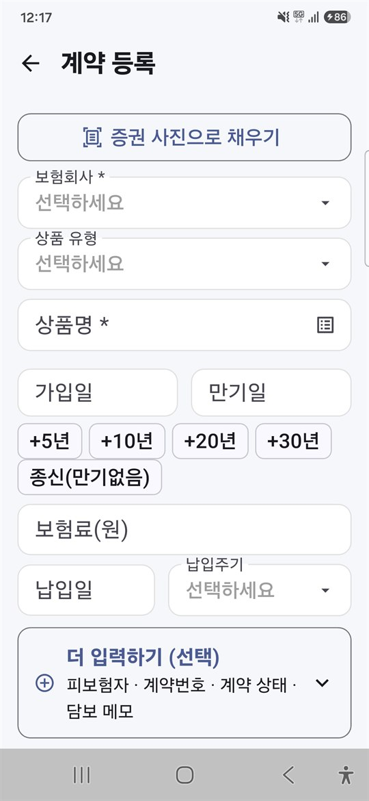
맨 위 증권 사진으로 채우기를 누르고 증권 첫 장을 찍거나 고릅니다. 보험사·상품명·계약번호·보험료 등을 읽어 체크한 칸만 채웁니다. 글자를 잘못 읽을 수 있으니 저장 전에 확인하세요.
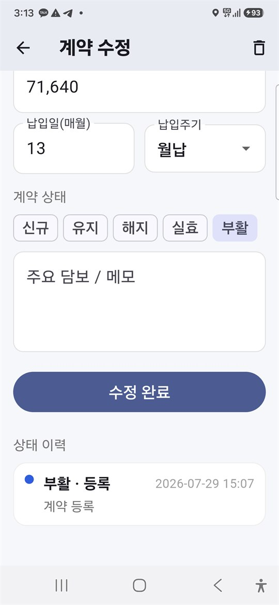
| 신규 · 유지 · 부활 | 살아 있는 계약 — 일정·알림·합계에 들어갑니다 |
| 실효 · 해지 | 끝난 계약 — 기록으로만 남습니다 |
계약이 끝났으면 지우지 말고 상태를 해지로 바꾸세요. 기록이 남습니다. 잘못 넣은 계약만 오른쪽 위 휴지통으로 지웁니다.
자동차보험처럼 해마다 다시 드는 계약은, 만기 달이 되면 계약에 이 계약으로 갱신 등록 버튼이 생깁니다. 누르면 내용이 채워진 새 계약이 열립니다. 옛 계약은 ‘갱신됨’으로 남고, 보험료가 두 번 잡히지 않습니다.
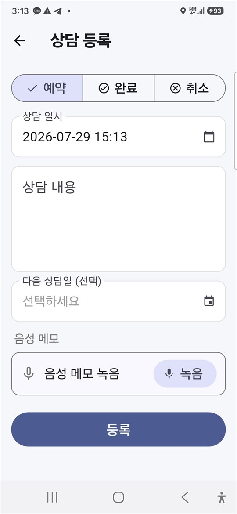
고객 화면의 상담 추가를 누릅니다.
다음 상담일을 적어 두면 그날도 일정·알림이 생깁니다. 적기 어려우면 녹음 버튼으로 음성 메모를 남기세요.
고객 화면 오른쪽 위 ⋮ > 이력 타임라인을 누르면 상담·계약·할 일이 날짜순으로 한 줄에 모입니다.
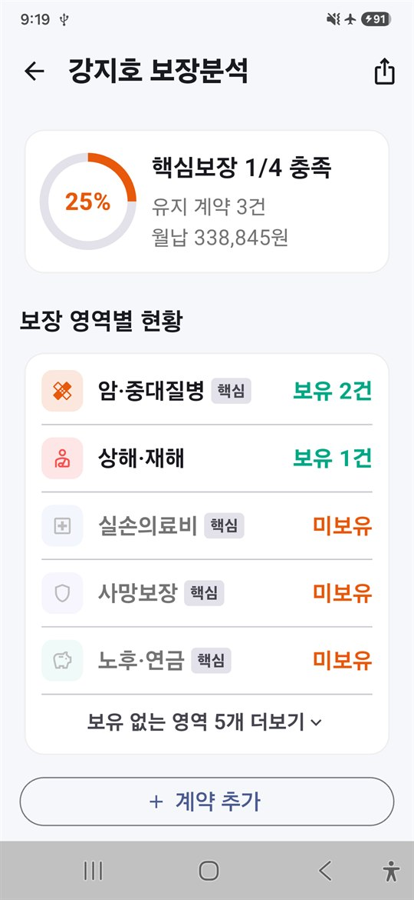
고객 화면 맨 위 보장분석을 누르세요. 실손의료비 · 암·중대질병 · 사망보장 · 노후·연금 네 가지 중 무엇이 비었는지, 같은 보장이 겹치는지 보여 주고, 빈 곳마다 권유할 말을 한 줄씩 붙여 줍니다. 가족이 피보험자인 계약은 따로 적어 줍니다.
보장분석 오른쪽 위 공유 아이콘 → 이미지로 공유하기를 누르면 카톡·문자로 보낼 수 있는 한 장짜리 그림이 만들어집니다.
고객 탭 맨 위 소개 관계를 누르면 누가 누구를 소개했는지 나옵니다. 고객을 등록할 때 소개자를 적어 두어야 보입니다.
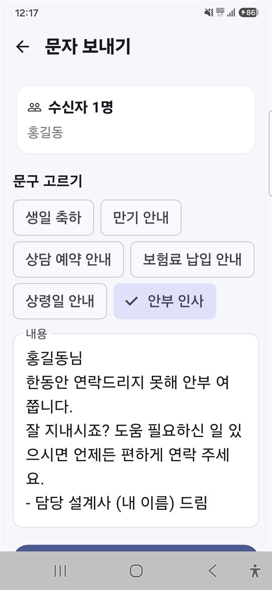
문자나 전화를 하고 돌아오면 ‘기록을 남길까요?’를 묻습니다. 남기면 상담 기록에 들어갑니다.
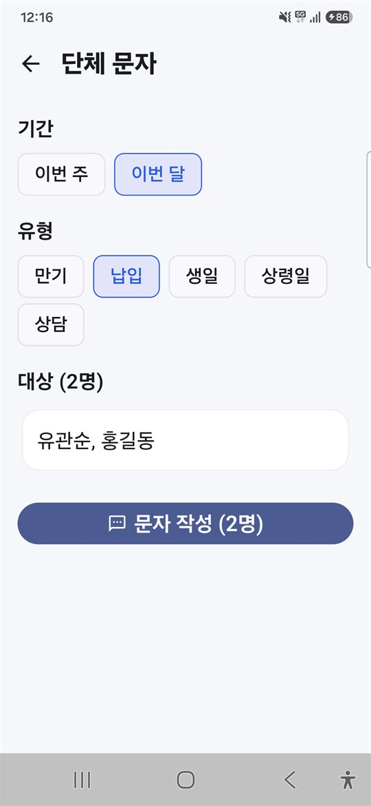
전화번호가 없는 고객과 수신거부 고객은 빠집니다. 만기·납입 안내처럼 계약에 따른 안내라면 문자 화면에서 수신거부 고객도 넣을 수 있습니다(광고성 문자는 안 됩니다).
설정 > 문자 문구 관리에서 기본 문구 여섯 개를 고칠 수 있습니다. 기본값을 누르면 원래대로 돌아갑니다.
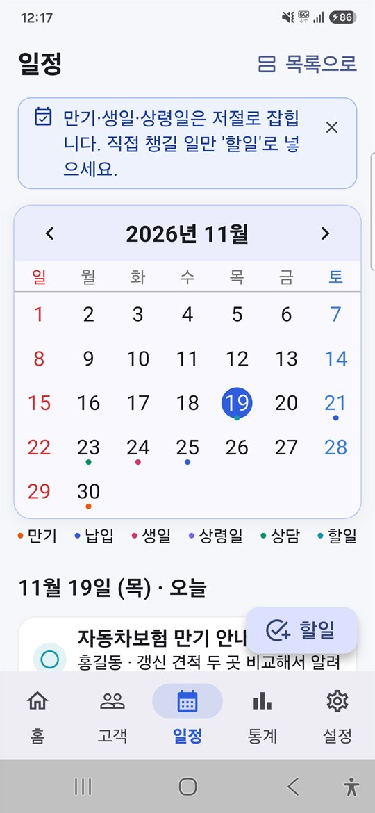
| 일정 | 무엇을 넣으면 생기나 |
|---|---|
| 만기 | 계약의 만기일 |
| 납입 | 계약의 납입일 |
| 생일 · 상령일 | 고객의 생년월일 |
| 상담 | ‘예약’으로 적은 상담, 적어 둔 다음 상담일 |
| 할 일 | 직접 적은 할 일 |
달력에서 날짜를 누르면 그날 일정이 아래에 나옵니다. 오른쪽 위 목록으로를 누르면 날짜별 목록으로 바뀝니다.
일정 탭 오른쪽 아래 할일을 누르고 내용과 날짜를 적습니다. 고객을 연결해 두면 그 고객 이름과 전화가 함께 나옵니다.
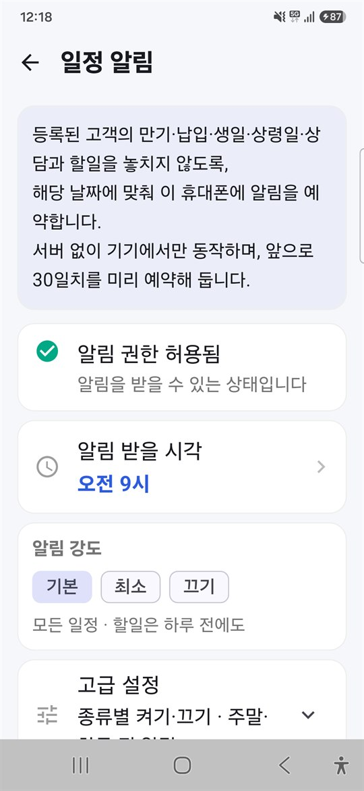
알림이 너무 많으면 알림 강도를 최소(만기·납입만)로 바꾸세요. 고객 한 명에 대한 알림에는 문자 보내기 버튼이 붙어 바로 문자를 보낼 수 있습니다.
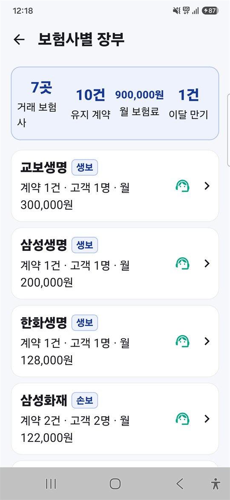
여러 보험사 계약을 함께 다룰 때 쓰세요. 홈 아래쪽 또는 설정 > 보험사별 장부에서 엽니다.
통계 탭에서 고객 수 · 유지 계약 · 월 보험료 합계 · 이번 달 신규 계약, 그리고 보험사별·상품별 분포와 최근 6개월 추이를 봅니다.
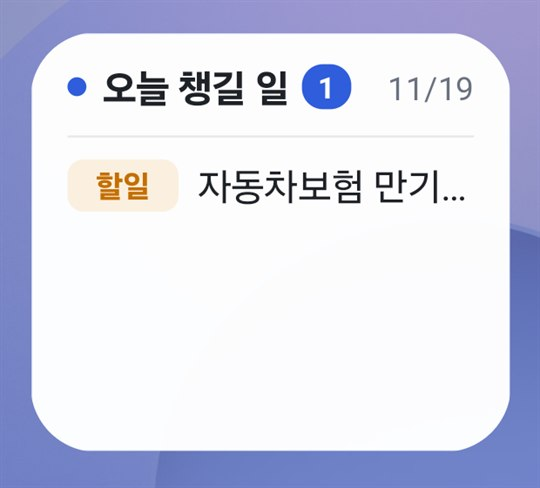
앱을 열지 않아도 휴대폰 바탕화면에서 오늘 챙길 고객을 볼 수 있습니다.
창이 뜨지 않으면, 바탕화면 빈 곳을 길게 누르고 위젯 → 보험노트 → ‘오늘 챙길 일’을 끌어다 놓으세요.
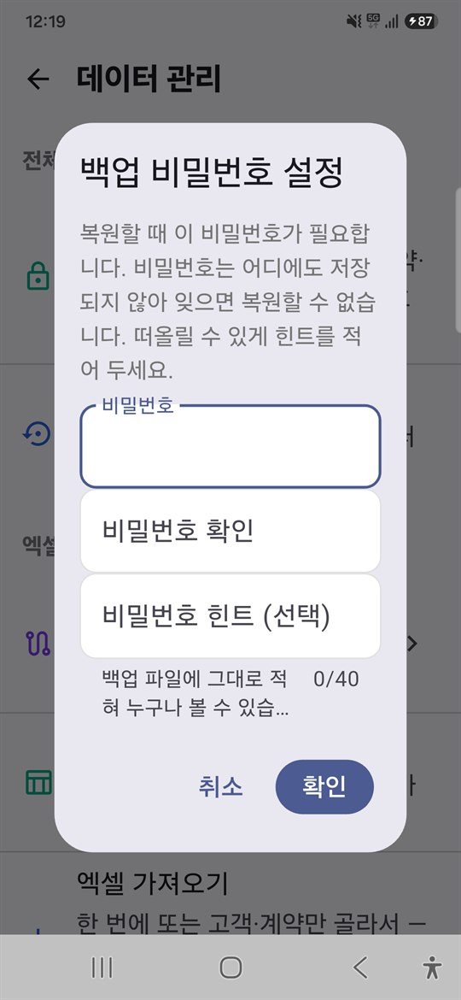
고객·계약·상담·사진까지 모두 파일 하나에 담깁니다.
새 휴대폰에 앱을 깔고 설정 > 데이터 관리 > 백업 복원에서 파일을 고르고 비밀번호를 넣습니다.
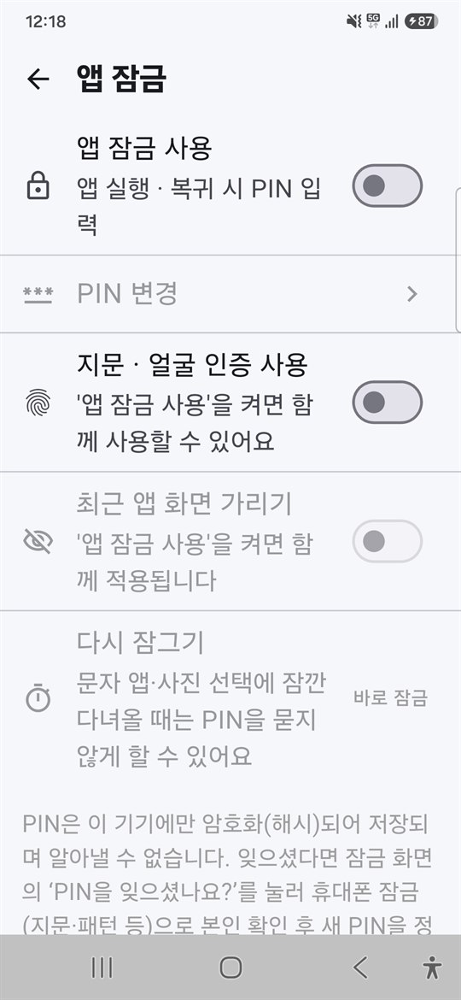
설정 > 데이터 관리의 엑셀 양식 다운받기 · 엑셀 가져오기 · 엑셀 내보내기를 씁니다. PC에서 자료를 보거나 고칠 때 씁니다(사진은 담기지 않습니다).
설정 > 앱 잠금에서 숫자 4자리 PIN을 정하면 앱을 열 때마다 잠금이 걸립니다. 지문·얼굴 인증도 쓸 수 있습니다.
엑셀로 한꺼번에 넣으세요(3장). 계약 시트만 채워도 고객이 저절로 만들어집니다.
고객 화면 오른쪽 위 ⋮ > 고객 삭제를 누릅니다. 목록·일정·알림·통계에서 빠지고, 첨부 서류와 상담 녹음은 휴대폰에서 지워집니다. 남은 할 일도 함께 지울지 고를 수 있습니다.
보험 나이가 한 살 오르는 날입니다(생일 6개월 뒤). 이 날이 지나면 보험료가 오를 수 있어 미리 알려 드립니다.
2026년 12월 31일까지 모든 기능이 무료입니다. 2027년부터 보장분석 · 리포트 · 단체 문자 · 통계는 연 구독으로 열립니다. 고객·계약·일정·알림·백업·엑셀·한 명에게 보내는 문자는 계속 무료입니다. 설치한 날부터 1개월은 모든 기능을 쓸 수 있습니다.
거의 필요 없습니다. 주소 검색 · 새 버전 확인 · 이용 기간 확인 때만 씁니다. 고객 자료는 밖으로 나가지 않습니다.
아니요. 고객·계약 자료는 그대로 남습니다. 새 버전이 나오면 앱을 켤 때 알려 드립니다.
보험노트 v1.1.18 (26) 사용설명서 · 2026년 11월 18일 · 모든 데이터는 사용자의 기기에만 저장됩니다
© 2026 디벨로직(Develogic). All rights reserved.
이 사용설명서의 본문 · 편집 구성 · 화면 캡처 · 도표, 그리고 보험노트 앱의 화면 디자인 · 아이콘 · 안내 문구 · 상품 목록 데이터는 대한민국 저작권법의 보호를 받는 저작물입니다.
저작권자의 사전 서면 동의 없이 이 저작물의 전부 또는 일부를 복제 · 전송 · 배포 · 출판 · 번역하거나 2차적저작물로 작성하는 행위를 금합니다. 영리 목적으로 이용하거나 이를 바탕으로 유사한 소프트웨어 · 문서를 제작하는 경우도 마찬가지입니다.
저작재산권을 침해한 자는 저작권법 제136조에 따라 5년 이하의 징역 또는 5천만원 이하의 벌금에 처해질 수 있으며, 저작권자는 이와 별도로 침해의 정지 및 손해배상을 청구할 수 있습니다.
‘보험노트’, ‘InsuMate’ 및 관련 로고는 디벨로직의 상표입니다.
이 설명서의 내용은 앱 개선에 따라 사전 통지 없이 변경될 수 있습니다. 문의 · 이용 허락 요청: thedeveljun@gmail.com